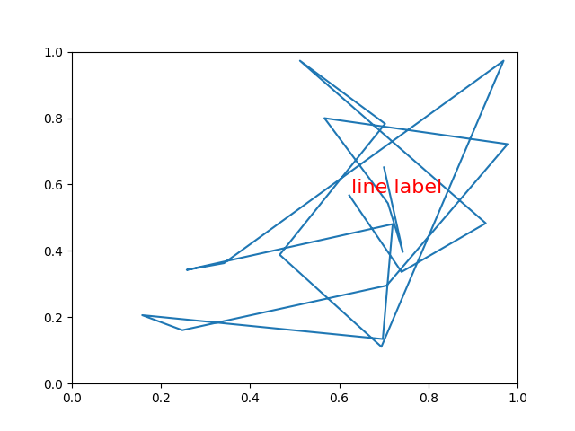

Version 2.1.2
Override basic methods so an artist can contain another artist. In this case, the line contains a Text instance to label it.
import numpy as np
import matplotlib.pyplot as plt
import matplotlib.lines as lines
import matplotlib.transforms as mtransforms
import matplotlib.text as mtext
class MyLine(lines.Line2D):
def __init__(self, *args, **kwargs):
# we'll update the position when the line data is set
self.text = mtext.Text(0, 0, '')
lines.Line2D.__init__(self, *args, **kwargs)
# we can't access the label attr until *after* the line is
# inited
self.text.set_text(self.get_label())
def set_figure(self, figure):
self.text.set_figure(figure)
lines.Line2D.set_figure(self, figure)
def set_axes(self, axes):
self.text.set_axes(axes)
lines.Line2D.set_axes(self, axes)
def set_transform(self, transform):
# 2 pixel offset
texttrans = transform + mtransforms.Affine2D().translate(2, 2)
self.text.set_transform(texttrans)
lines.Line2D.set_transform(self, transform)
def set_data(self, x, y):
if len(x):
self.text.set_position((x[-1], y[-1]))
lines.Line2D.set_data(self, x, y)
def draw(self, renderer):
# draw my label at the end of the line with 2 pixel offset
lines.Line2D.draw(self, renderer)
self.text.draw(renderer)
# Fixing random state for reproducibility
np.random.seed(19680801)
fig, ax = plt.subplots()
x, y = np.random.rand(2, 20)
line = MyLine(x, y, mfc='red', ms=12, label='line label')
#line.text.set_text('line label')
line.text.set_color('red')
line.text.set_fontsize(16)
ax.add_line(line)
plt.show()
Total running time of the script: ( 0 minutes 0.019 seconds)